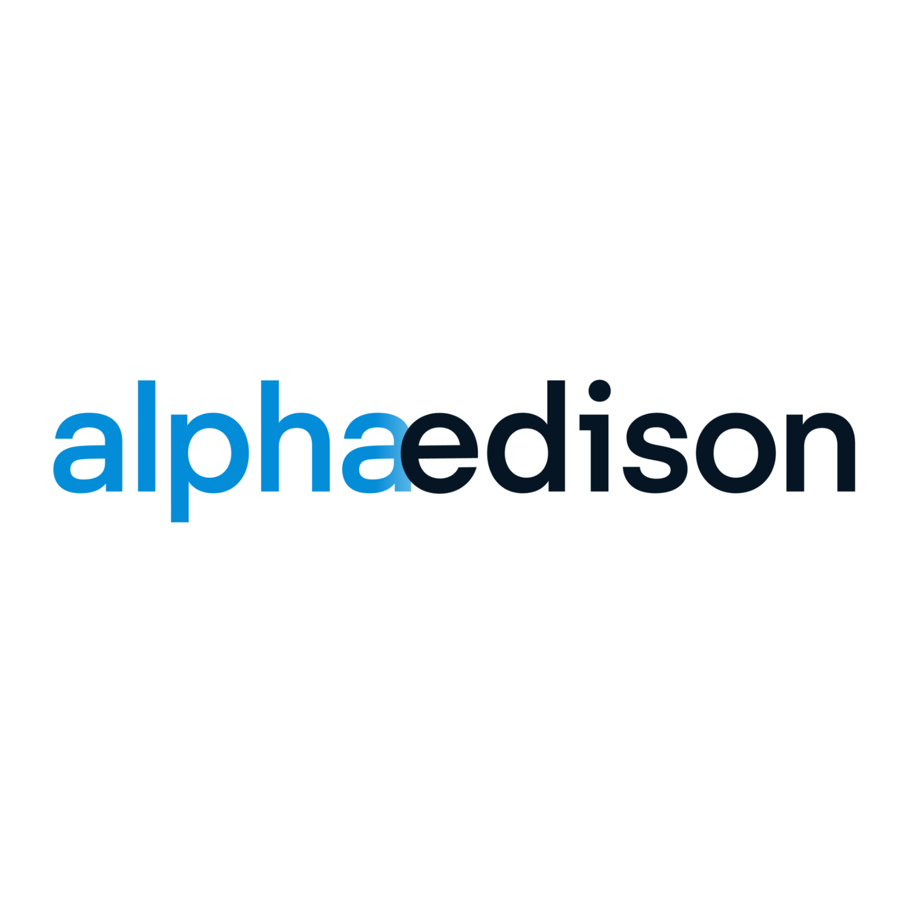

Overview
Built Chrome extension and RAG chatbot for Alpha Edison ($150M+ AUM VC firm with 75+ portfolio companies), enabling analysts to scrape company websites, auto-populate Retool dashboards, and query structured diligence insights. Reduced manual research time by approximately 70% (10+ hours per week).
Developed as part of the Claremont Colleges Venture Capital engineering team, the tool is now in active use by Alpha Edison's investment team, streamlining early-stage diligence by automating information extraction and providing conversational AI-powered analysis of scraped company data.
Impact
Reduced manual research time
Per analyst on diligence prep
Alpha Edison assets under management
Supported by diligence tool
The Problem
Alpha Edison's venture capital analysts spent hours manually collecting information from company websites, news articles, and market data during the diligence process. This involved extensive copy-pasting, note-taking, and manual organization of unstructured web content into usable research documents.
The manual workflow slowed down early-stage diligence, created inconsistencies in data collection, and prevented analysts from spending time on higher-value activities like strategic analysis and founder conversations. The firm needed to automate extraction and centralize information while maintaining data quality.
Solution
Designed three-part system combining browser automation, structured data storage, and AI-powered analysis:
Chrome Extension
Scrapes company websites using Chrome Scripting API, handles infinite scroll and dynamic content, parses pages with Mercury Parser for clean extraction, and sends structured payloads (title, URL, timestamp, content) to Retool database. Includes fallback OCR layer with Tesseract for unstructured sites.
Retool Dashboard
Centralized SQL database storing scraped company information with standardized schema. Provides analysts with toggles for data management, search capabilities, and easy access to historical diligence research across portfolio companies.
RAG Chatbot
Retrieval-Augmented Generation system allowing analysts to query scraped content conversationally. LLM stays grounded in actual company documents rather than hallucinating, turning raw text into actionable diligence insights with natural language queries.
Technical Architecture
The Chrome extension frontend uses HTML, CSS, and JavaScript with three main screens: intro with "Start Scrape" button, loading screen with progress indicator, and results screen displaying parsed and raw content with action buttons (retry, commit to SQL, download).
Scraping Pipeline:
- Content script injected into active browser tab via Chrome Scripting API
- Programmatic scrolling loads dynamic content (infinite scroll sections)
- Extraction of visible text (document.body.innerText) and URL
- Mercury Parser processes unstructured web pages into clean, structured HTML by removing ads, navigation bars, and extraneous elements
- Fallback to Tesseract OCR with segmentation modes for non-parsable sites
Integration & Storage:
- Secure API requests send payload (title, URL, timestamp, content) to Retool
- SQL database stores structured company data with standardized schema
- Workflow API keys and payload validation harden security
- RAG pipeline retrieves scraped content for LLM queries via OpenAI APIs
Key Design Decisions
Browser Extension Approach
Lowest friction way to capture company data during browsing. Analysts scrape sites as they research without changing existing workflows or switching between tools.
Mercury Parser
Ensures analysts receive clean, focused content instead of cluttered HTML. Removes noise from web pages to improve downstream LLM performance and readability.
Retool Integration
Quick and secure way to build live internal tool without custom-hosting infrastructure. Provides familiar SQL interface and rapid dashboard iteration.
RAG Pipeline
Grounds LLM responses in actual company documents rather than allowing hallucination. Retrieval-augmented generation provides accurate, source-backed insights.
Technical Challenges
Infinite Scroll Websites: Solved with automated scrolling scripts that programmatically trigger loading of dynamic content, with backup OCR layer to capture content that Mercury Parser couldn't extract cleanly.
Unstructured Text: Used segmentation modes in Tesseract to improve readability and structure before passing to LLM, ensuring chatbot could parse even poorly formatted or image-based content.
API Security: Hardened fetch requests with workflow API keys and payload validation to protect proprietary diligence data while maintaining ease of use for analysts.
Active Deployment
The tool is currently in use by Alpha Edison's investment team. Early adoption data confirms diligence prep is approximately 70% faster, saving associates 10+ hours per week. Analysts now instantly query scraped websites through the chatbot rather than manually compiling research notes, enabling faster decision-making during early-stage evaluation.
VC associates reported the tool "meaningfully reduced manual effort" and Alpha Edison has integrated it into active diligence workflows across its 75+ portfolio companies.
Future Enhancements
- Extend scraping to competitor analysis, news mentions, and market data
- Add automated news sentiment analysis for portfolio companies
- Broaden search capabilities with API-driven enrichment (OpenAI search tools)
- Integrate with additional data sources (Crunchbase, PitchBook, LinkedIn)